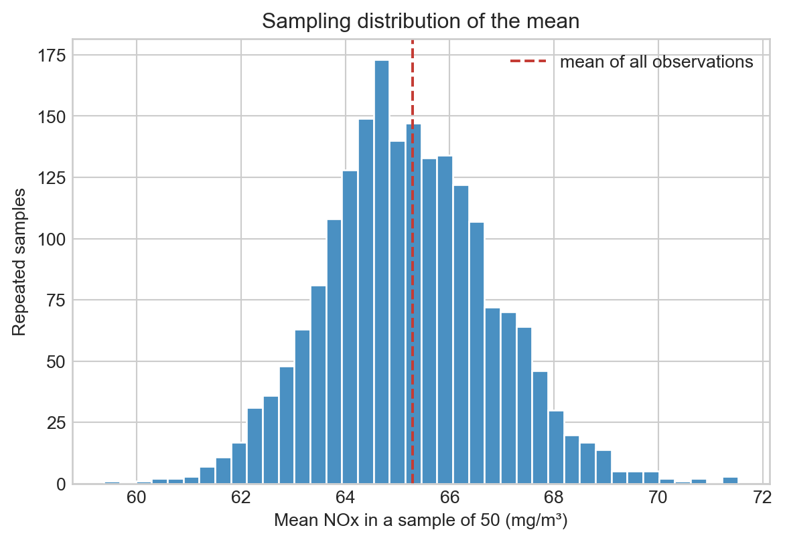

Statistical ideas matter in this course because engineering data vary. This notebook gives a practical introduction to sampling distributions, uncertainty intervals, null hypotheses, and p-values. We will return to these ideas when interpreting regression models.
Learning objectives
Explain why repeated samples give different numerical summaries.
Use resampling to estimate uncertainty in a mean.
Interpret a p-value as evidence relative to a specified null model.
Separate statistical evidence from engineering importance.
1. Load the data
We will use NOx emissions as a running example. The complete dataset is our available collection of observations; a smaller subset stands in for the limited sample often available in practice.
import numpy as npimport pandas as pdimport matplotlib.pyplot as pltfrom pathlib import Pathfrom urllib.request import urlretrieveplt.style.use("seaborn-v0_8-whitegrid")rng = np.random.default_rng(4520)DATA_URL = ("https://raw.githubusercontent.com/changyaochen/MECE4520/master/""site/data/gas-turbine-emissions.csv")data_path =next( (path for path in [Path("../data/gas-turbine-emissions.csv"), Path("site/data/gas-turbine-emissions.csv"), Path("gas-turbine-emissions.csv")] if path.exists()), Path("gas-turbine-emissions.csv"),)ifnot data_path.exists(): urlretrieve(DATA_URL, data_path)data = pd.read_csv(data_path)nox = data["NOX"].to_numpy()print(f"NOx observations: {len(nox):,}")print(f"Mean NOx: {nox.mean():.2f} mg/m³")
NOx observations: 36,733
Mean NOx: 65.29 mg/m³
2. Sampling distributions
Imagine repeatedly taking 50 observations from this dataset and calculating their mean NOx. The mean changes from sample to sample. The distribution of those repeated means is called a sampling distribution.
For this demonstration we sample rows independently. The original observations are ordered in time, so this simplification is not always appropriate for a forecasting problem; later in the course we will handle temporal splits explicitly.
sample_size =50n_repetitions =2_000sample_means = np.array([ rng.choice(nox, size=sample_size, replace=False).mean()for _ inrange(n_repetitions)])fig, ax = plt.subplots(figsize=(7, 4.5))ax.hist(sample_means, bins=40, color="#4a90c2", edgecolor="white")ax.axvline(nox.mean(), color="#c43c35", linestyle="--", label="mean of all observations")ax.set(xlabel="Mean NOx in a sample of 50 (mg/m³)", ylabel="Repeated samples", title="Sampling distribution of the mean")ax.legend()plt.show()print(f"Standard deviation of repeated sample means: {sample_means.std(ddof=1):.2f} mg/m³")

Standard deviation of repeated sample means: 1.62 mg/m³
Although individual NOx readings vary substantially, sample means vary less. This is the central-limit intuition we will use later when assessing uncertainty in fitted model coefficients.
3. Bootstrap uncertainty interval
A bootstrap treats one observed sample as a stand-in for the population. We repeatedly resample that sample with replacement, recalculate the statistic, and use the resulting distribution to estimate uncertainty.
The interval quantifies sampling uncertainty under the assumptions built into the bootstrap. It does not say that every individual emission measurement lies in this interval.
4. A null model and a p-value
Suppose we ask whether turbine inlet temperature (TIT) and NOx exhibit an association in these observations. A simple null model says that the two columns have no relationship. If that were true, shuffling NOx values across rows would produce equally plausible pairings.
The next cell compares the observed correlation with correlations created under that shuffled, no-association null model.
analysis_data = data[["TIT", "NOX"]].sample(n=2_000, random_state=4520)x = analysis_data["TIT"].to_numpy()y = analysis_data["NOX"].to_numpy()observed_correlation = np.corrcoef(x, y)[0, 1]null_correlations = np.array([ np.corrcoef(x, rng.permutation(y))[0, 1]for _ inrange(2_000)])p_value = (np.abs(null_correlations) >=abs(observed_correlation)).mean()fig, ax = plt.subplots(figsize=(7, 4.5))ax.hist(null_correlations, bins=40, color="#999999", edgecolor="white")ax.axvline(observed_correlation, color="#c43c35", linewidth=2, label="observed correlation")ax.axvline(-observed_correlation, color="#c43c35", linewidth=2)ax.set(xlabel="Correlation under the shuffled null model", ylabel="Shuffles", title="Is the observed association unusual under no association?")ax.legend()plt.show()print(f"Observed correlation: {observed_correlation:.3f}")print(f"Permutation p-value (two-sided): {p_value:.4f}")
A p-value is the fraction of null-model simulations at least as extreme as the observed result. It is not the probability that the null hypothesis is true, and it is not a measure of engineering importance. With thousands of observations, even a small effect can have a very small p-value.
Here the shuffled null model also leaves out important engineering structure, including other operating variables and chronology. That is deliberate: the example is about defining a comparison model clearly, not about making a final causal claim.
Check-in
Why is the sampling distribution of the mean narrower than the distribution of individual NOx measurements?
What does the bootstrap interval describe, and what does it not describe?
Why does a small p-value not, by itself, establish a practically important or causal effect?
Keep your answers in your own notes. In the regression unit, we will revisit uncertainty and hypothesis tests in the context of fitted coefficients and predictions.